Recursos de imagens
Se precisa de capturas de tela do Instantbird para compor algum artigo ou postagem de blog e não puder fazê-lo você mesmo, sinta-se a vontade para usar qualquer um dos nossos.
The license for these screenshots is: Creative Commons Attribution ShareAlike (CC-2.0-BY-SA).
Visão geral do Instantbird
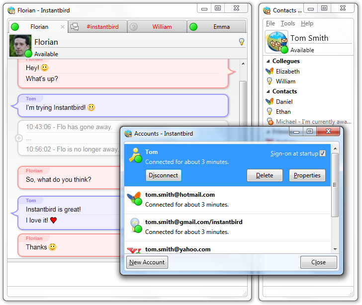
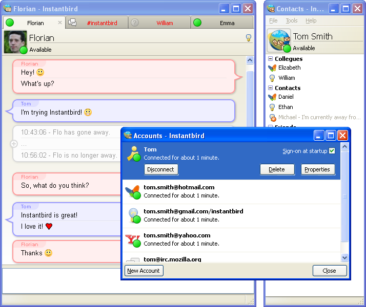
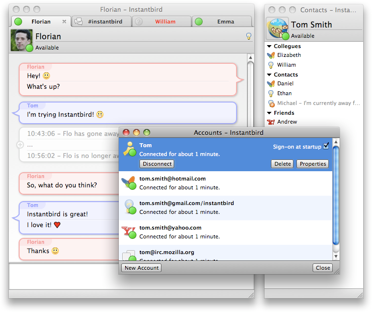
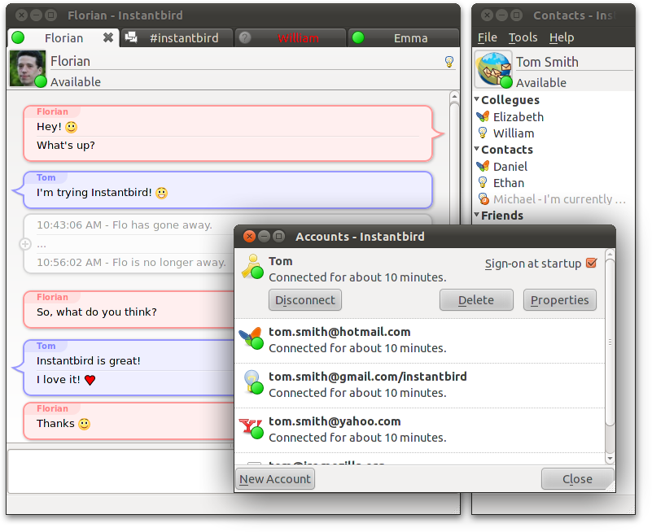
Funciona no Windows, Mac OS X e Linux
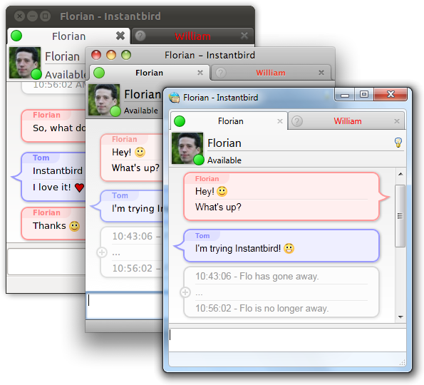
Janela de conversa
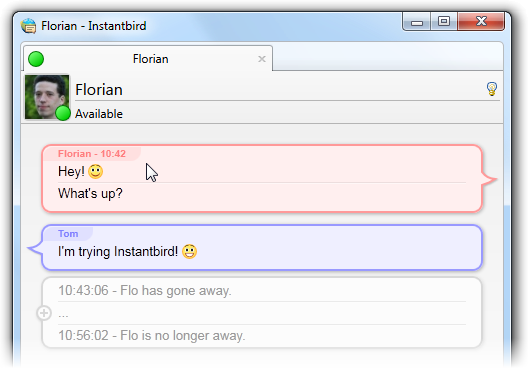
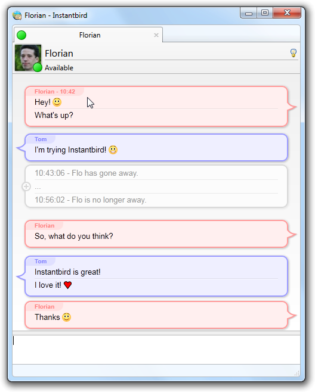
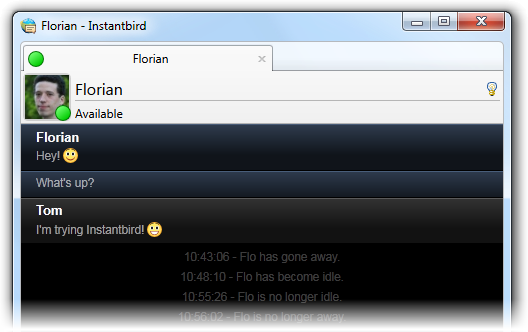
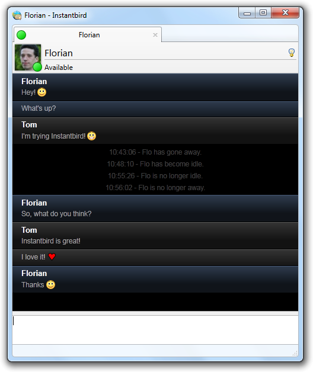
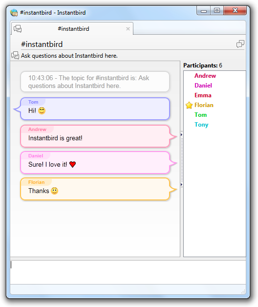
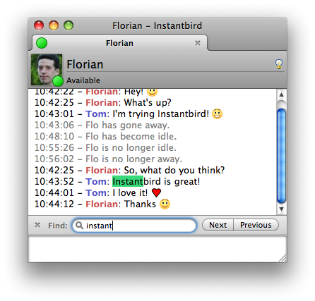
Janela de Preferências
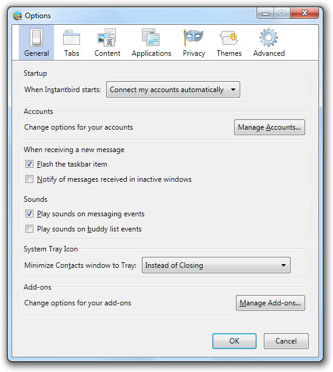
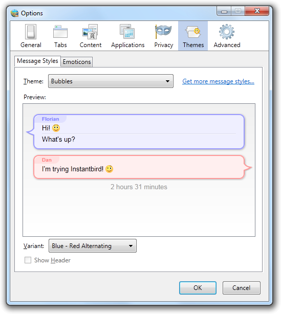
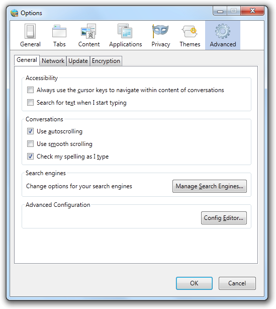